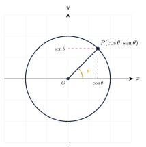
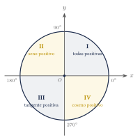
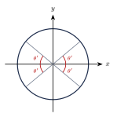
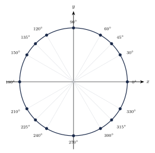

Capítulo 27
Círculo trigonométrico
UNAMIPNCENEVAL
El círculo trigonométrico permite extender las razones trigonométricas a ángulos de cualquier medida, no solamente a los ángulos agudos de un triángulo rectángulo. Mediante las coordenadas de un punto sobre el círculo unitario pueden determinarse el seno, el coseno, la tangente y las demás funciones trigonométricas.
En este capítulo estudiarás la posición estándar de un ángulo, los signos de las funciones trigonométricas en cada cuadrante, los ángulos de referencia, los ángulos negativos y las principales fórmulas de reducción.
27.1 Definición del círculo trigonométrico#
El círculo trigonométrico, también llamado círculo unitario, es la circunferencia de radio \(1\) con centro en el origen del plano cartesiano.
Su ecuación es:
Un ángulo \(\theta\) se encuentra en posición estándar cuando:
- su vértice está en el origen;
- su lado inicial coincide con el eje positivo \(x\);
- su lado final se obtiene mediante un giro de medida \(\theta\).
Los ángulos positivos se miden en sentido contrario a las manecillas del reloj. Los ángulos negativos se miden en el sentido de las manecillas del reloj.
Sea \(\theta\) un ángulo en posición estándar. Si su lado final interseca el círculo unitario en el punto:
entonces:
Por tanto:
Además, cuando \(x\neq0\):
La relación entre las coordenadas del punto y las razones trigonométricas puede observarse en la siguiente figura:

Como todo punto del círculo unitario satisface:
y además:
se obtiene la identidad fundamental:
27.2 Las seis funciones en el círculo trigonométrico#
Si:
es el punto determinado por el lado final de \(\theta\), entonces:
No todas las funciones trigonométricas están definidas para todos los ángulos.
- La tangente y la secante no están definidas cuando: \[\cos\theta=0.\]
- La cotangente y la cosecante no están definidas cuando: \[\sen\theta=0.\]
Esto ocurre porque la división entre cero no está definida.
El lado final de un ángulo \(\theta\) interseca el círculo unitario en:
Encuentra las seis funciones trigonométricas.
Ver solución
A partir de las coordenadas:
obtenemos:
27.3 Signos por cuadrante#
Los ejes coordenados dividen el plano en cuatro regiones llamadas cuadrantes.
- El cuadrante I contiene los ángulos entre: \[0^\circ \quad\text{y}\quad 90^\circ.\]
- El cuadrante II contiene los ángulos entre: \[90^\circ \quad\text{y}\quad 180^\circ.\]
- El cuadrante III contiene los ángulos entre: \[180^\circ \quad\text{y}\quad 270^\circ.\]
- El cuadrante IV contiene los ángulos entre: \[270^\circ \quad\text{y}\quad 360^\circ.\]
Los ángulos cuyos lados finales se encuentran sobre un eje coordenado no pertenecen a ningún cuadrante.
Por ejemplo:
son ángulos cuadrantales.
Los signos de las funciones principales son:
Cuadrante I
\[\sen\theta>0, \qquad \cos\theta>0, \qquad \tan\theta>0.\]Cuadrante II
\[\sen\theta>0, \qquad \cos\theta<0, \qquad \tan\theta<0.\]Cuadrante III
\[\sen\theta<0, \qquad \cos\theta<0, \qquad \tan\theta>0.\]Cuadrante IV
\[\sen\theta<0, \qquad \cos\theta>0, \qquad \tan\theta<0.\]
Las funciones recíprocas tienen el mismo signo que las funciones de las que provienen:
tiene el mismo signo que \(\sen\theta\);
tiene el mismo signo que \(\cos\theta\);
tiene el mismo signo que \(\tan\theta\).
Una forma de recordar los signos es recorrer los cuadrantes en el orden:
Esto indica qué funciones principales son positivas en los cuadrantes I, II, III y IV.

La figura indica las funciones trigonométricas positivas en cada cuadrante:
- En el cuadrante I, todas las funciones trigonométricas son positivas.
- En el cuadrante II, el seno y la cosecante son positivos.
- En el cuadrante III, la tangente y la cotangente son positivas.
- En el cuadrante IV, el coseno y la secante son positivos.
Las demás funciones son negativas en cada cuadrante.
Determina el signo de:
Ver solución
El ángulo \(200^\circ\) se encuentra en el cuadrante III. En este cuadrante:
y:
Determina el signo de:
Ver solución
El ángulo \(315^\circ\) se encuentra en el cuadrante IV. En este cuadrante, el seno es negativo y el coseno es positivo:
27.4 Ángulos coterminales#
Dos ángulos son coterminales si tienen el mismo lado inicial y el mismo lado final cuando se colocan en posición estándar.
Sus medidas difieren en un número entero de vueltas completas.
Si \(\theta\) está expresado en grados, todos sus ángulos coterminales pueden escribirse como:
Si \(\theta\) está expresado en radianes, se escriben como:
Encuentra un ángulo coterminal entre \(0^\circ\) y \(360^\circ\) para:
Ver solución
Restamos vueltas completas:
Por tanto:
es coterminal con:
Encuentra un ángulo positivo coterminal con:
Ver solución
Sumamos una vuelta completa:
Por tanto:
es coterminal con:
27.5 Periodicidad#
El seno y el coseno tienen periodo:
o, equivalentemente:
Por tanto, si \(k\in\Z\):
En radianes:
La tangente tiene periodo:
o, equivalentemente:
Por tanto:
En radianes:
Calcula:
Ver solución
Restamos una vuelta completa:
Por periodicidad:
Calcula:
Ver solución
Como la tangente tiene periodo \(180^\circ\):
Por tanto:
27.6 Ángulos de referencia#
El ángulo de referencia de un ángulo \(\theta\) es el ángulo agudo formado entre el lado final de \(\theta\) y el eje \(x\).
Se denota mediante:
El ángulo de referencia siempre se considera positivo.
Si \(0^\circ<\theta<360^\circ\), el ángulo de referencia se calcula de la siguiente manera:
- Cuadrante I: \[\theta'=\theta.\]
- Cuadrante II: \[\theta'=180^\circ-\theta.\]
- Cuadrante III: \[\theta'=\theta-180^\circ.\]
- Cuadrante IV: \[\theta'=360^\circ-\theta.\]
Si \(0<\theta<2\pi\), entonces:
- Cuadrante I: \[\theta'=\theta.\]
- Cuadrante II: \[\theta'=\pi-\theta.\]
- Cuadrante III: \[\theta'=\theta-\pi.\]
- Cuadrante IV: \[\theta'=2\pi-\theta.\]
Los ángulos de referencia pueden visualizarse en el mismo círculo trigonométrico:

El valor absoluto de una función trigonométrica de \(\theta\) coincide con el valor de la misma función aplicada a su ángulo de referencia.
El signo se determina mediante el cuadrante:
Encuentra:
Ver solución
El ángulo \(150^\circ\) pertenece al cuadrante II, donde el seno es positivo.
El ángulo de referencia es:
Por tanto:
Encuentra:
Ver solución
El ángulo \(240^\circ\) pertenece al cuadrante III, donde el coseno es negativo.
El ángulo de referencia es:
Por tanto:
Encuentra:
Ver solución
El ángulo \(315^\circ\) pertenece al cuadrante IV, donde la tangente es negativa.
El ángulo de referencia es:
Por tanto:
27.7 Ángulos negativos#
El seno y la tangente son funciones impares:
El coseno es una función par:
La cosecante y la cotangente son funciones impares:
La secante es una función par:
Calcula:
Ver solución
Como el seno es una función impar:
Calcula:
Ver solución
Como el coseno es una función par:
27.8 Fórmulas de reducción#
Para los valores de \(\theta\) en los que las funciones estén definidas:
También:
Se cumplen:
Se cumplen:
Se cumplen:
Expresa:
en términos de una cofunción.
Ver solución
Como:
se tiene:
Simplifica:
Ver solución
Aplicamos:
Por tanto:
27.9 Valores de funciones en ángulos notables extendidos#
Los principales valores exactos son:
La tangente de \(90^\circ\) no es infinita.
La tangente se define mediante:
Como:
se produciría una división entre cero. Por esta razón:
no está definida.
27.10 Puntos notables del círculo unitario#
Los puntos principales del círculo trigonométrico son:
En cada punto:
Por tanto, la primera coordenada proporciona el coseno y la segunda proporciona el seno.
27.11 Círculo trigonométrico con ángulos notables#

27.12 Ejercicios propuestos#
Indica el cuadrante en el que se encuentra cada ángulo:
Ver solución
- \(45^\circ\): cuadrante I.
- \(120^\circ\): cuadrante II.
- \(200^\circ\): cuadrante III.
- \(310^\circ\): cuadrante IV.
Determina el signo de:
Ver solución
\(130^\circ\) está en el cuadrante II: \(\sen 130^\circ > 0\), \(\cos 130^\circ < 0\), \(\tan 130^\circ < 0\).
Determina el signo de:
Ver solución
\(280^\circ\) está en el cuadrante IV: \(\sen 280^\circ < 0\), \(\cos 280^\circ > 0\).
Encuentra el ángulo de referencia de:
Ver solución
\(\theta' = 180^\circ - 135^\circ = 45^\circ\).
Encuentra el ángulo de referencia de:
Ver solución
\(\theta' = 210^\circ - 180^\circ = 30^\circ\).
Encuentra el ángulo de referencia de:
Ver solución
\(\theta' = 360^\circ - 300^\circ = 60^\circ\).
Calcula:
Ver solución
\(120^\circ\) está en el II cuadrante. Ángulo de referencia: \(180^\circ - 120^\circ = 60^\circ\). \[\sen 120^\circ = +\sen 60^\circ = \frac{\sqrt{3}}{2}.\]
Calcula:
Ver solución
\(225^\circ\) está en el III cuadrante. Ángulo de referencia: \(225^\circ - 180^\circ = 45^\circ\). \[\cos 225^\circ = -\cos 45^\circ = -\frac{\sqrt{2}}{2}.\]
Calcula:
Ver solución
\(330^\circ\) está en el IV cuadrante. Ángulo de referencia: \(360^\circ - 330^\circ = 30^\circ\). \[\tan 330^\circ = -\tan 30^\circ = -\frac{\sqrt{3}}{3}.\]
Calcula:
Ver solución
Expresa:
en términos de una cofunción.
Ver solución
Como \(50^\circ = 90^\circ - 40^\circ\): \[\sen 50^\circ = \sen(90^\circ - 40^\circ) = \cos 40^\circ.\]
Simplifica:
Considera únicamente los valores de \(\theta\) para los que la expresión está definida.